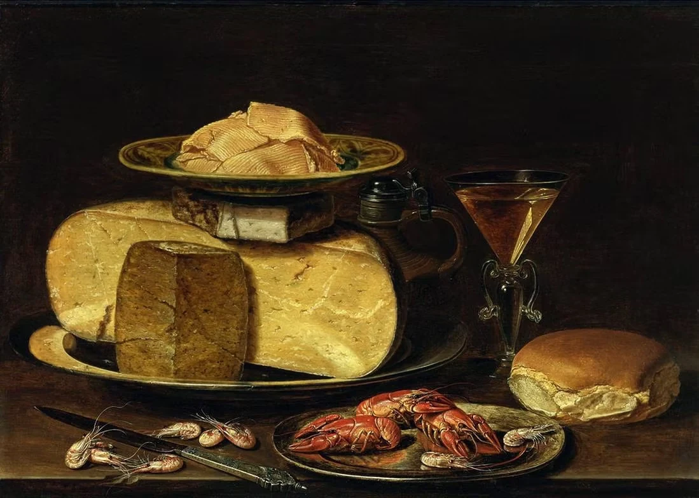

1524–1588
Plautilla Nelli
Religiosa e pittrice, prima pittrice fiorentina di cui si conservino opere.
Apri la schedaNel Cinquecento, tra Rinascimento e Manierismo, alcune donne ottennero formazione, committenze pubbliche e prestigio internazionale.
1524–1588
Religiosa e pittrice, prima pittrice fiorentina di cui si conservino opere.
Apri la scheda
1531–1626
Pittrice del tardo Rinascimento, tra le prime donne a raggiungere fama europea come ritrattista.
Apri la scheda
1547–1612
Incisora manierista italiana, tra le prime donne conosciute nella storia della stampa.
Apri la scheda
1552–1614
Pittrice manierista, tra le prime donne a esercitare professionalmente la pittura.
Apri la scheda
1552–1638
Pittrice manierista ravennate, specializzata in piccole tele religiose e ritratti.
Apri la scheda
1578–1630
Pittrice milanese, pioniera della natura morta italiana e raffinata ritrattista.
Apri la scheda
1593–1656
Pittrice caravaggesca, tra le massime protagoniste del Barocco italiano.
Apri la scheda
1594–1657
Pittrice fiamminga tra le maggiori specialiste della natura morta.
Apri la scheda
1600–1670
Pittrice barocca famosa per miniature, nature morte e botanica.
Apri la scheda